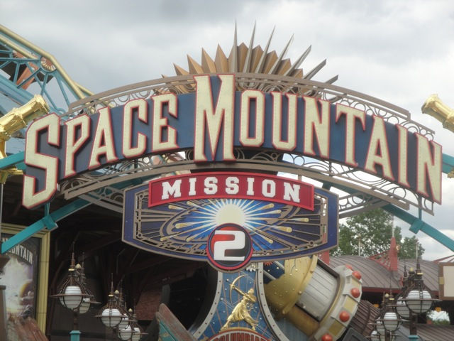

| |
Star Wars: Hyperspace Mountain Review

We're here at Disneyland Paris. Today's ride we'll be reviewing for you is Star Wars: Hyerspace Mountain. So Disney went full out and just completely Star Warsified the ride. However, it's still basically Space Mountian at heart. So I'm going to refer to it as such throughout this review. Now, the Paris Space Mountain is sort of the runt of the litter when it comes to the Space Mountains. Usually when people have the debate on the Space Mountains, they're usually fighting about whether they prefer Florida Space Mountain or California Space Mountain. But almost nobody roots for the Paris Space Mountain. In fact, the Paris Space Mountain tends to get tarred and feathered, usually with a lot of complaints about it being rough as hell. And sorry, but...yeah. It is a bit on the rough side. There is definetly some headbanging on this ride. But with that said, it's not NEARLY as bad as some people claim. In fact, some enthusiasts compare this ride to the nearby Gouderix. OK. Pause right here. Paris Space Mountain is not perfect by any means. It has its problems. It is rough. But it is LIGHTYEARS better than that peice of sh*t Gouderix. It f*cking runs rings around that ride!!! It's not NEARLY as bad!!! So with that said, let's get in the cars, pull down the OTSRs, and we're off. We dip down, head around a couple turns, and rise up. And then we stop. We're at an angle, just facing the sky. All the theming around us moves as it prepares us for launch. And it really does seem like we're going to launch into outer space. And then we launch. It's cool to actually launch on a Space Mountain, but while that launch gets us to the top, we lose that speed once we're at the top. It's kind of like the tower on Wicked, except this ride isn't nearly as good as Wicked. I wish I was back at Lagoon. Anyways, we're now inside, or should I say...in outer space. YAY!!!! =) Now, at this point, we can't really see what's going on. We just know that it's dark, and we see these asteroids flying past us. And yeah. We definetly know that stuff is going on as we clunk around, and flip around, going through a sidewinder, a corkscrew, and a cutback, or as Disneyland Paris is calling it, a tougne. But really. It's a cutback. Please stop giving new names to the same elements, especially ones as rare as cutbacks. After a bunch of time in the dark, we head around a turn and these bright flashing lights blind us. WEE!!! And yeah. That's pretty much the end as we just head through the brake run and back to the station. It's easily my least favorite of the three Space Mountains due to headbanging and some roughness. But at the same time, I kind of respect it just for the fact that they did put effort into the ride. I mean, Florida Space Mtn is basically just a couple drops and tight turns, and California Space Mtn is basically an Indoor Flitzer with a great soundtrack. This one has a launch, inversions, and all sorts of cool stuff. But because of the roughness, that brings the ride down a couple notches, because this isn't Vekoma's finest work. But I would like to see a Space Mountain that sort of this indoor coaster similar to Kanonen with all the theming and everything. Now that would kick ass.
6/10
Location: Disneyland Paris
Opened: 1995
Built by: Vekoma
Last Ridden: July 02, 2012
Star Wars: Hyperspace Mountain Photos



Home
|